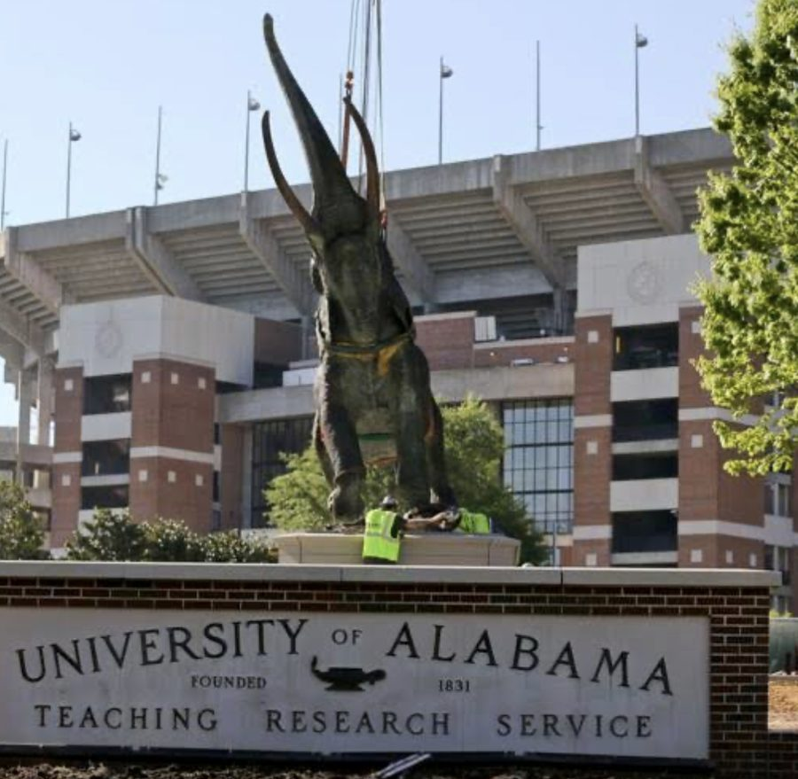

Preparation
I research an account before the first conversation — how it makes money, its cost structure, and the metrics its leadership reviews. Discovery then tests a specific hypothesis rather than starting from nothing.
Account Executive · Chattanooga, TN
I’m an account executive at RJ Young, where I was named Rookie of the Year for 2025 and finished third in sales performance across the East Region. Before moving into sales I spent three years managing client services and operations at a financial planning firm. I hold a finance degree and a master’s in financial planning.
I’m looking for my next account executive role — a consultative sale where account knowledge and preparation carry weight.

RJ Young Rookie of the Year
Promoted from Level 1 in January 2026. RJ Young sells office technology and managed services — print and document workflow, IT, and communications — to businesses across the Southeast.
Client-facing operations at a financial planning firm.
Co-owned a residential lawn care business while completing my degree.
How I work an account, start to close.
I research an account before the first conversation — how it makes money, its cost structure, and the metrics its leadership reviews. Discovery then tests a specific hypothesis rather than starting from nothing.
I confirm need, budget, decision process, and timing early, and I raise it directly when one of them is missing. It keeps the pipeline accurate and the forecast dependable.
My finance background lets me frame a proposal in the buyer’s own terms — cost per unit, payback period, and effect on next year’s budget — rather than as a feature comparison.
Having worked in client operations, I scope what can realistically be delivered and close on a defined plan with a named decision-maker and dated steps.
$102,463
I serve on the committee advisory board of the Educate Mpunde Initiative through Empower Through Health, a global health nonprofit. I lead fundraising strategy through targeted donor outreach and campaign design, which had raised $102,463 as of February 2026 toward constructing and sustaining a primary school in Mpunde Village. I also contribute to the project’s structural design and its long-term sustainability planning.
1 of 12
RJ Young selected me for the inaugural cohort of its Emerging Leaders program, following completion of the Leadership Development Program — regular sessions with company executives and senior leadership.
I mentor through Best Buddies, building one-on-one friendships with individuals with intellectual disabilities. Previously I volunteered with Believe UA and Junior Achievement, supporting students and teaching financial literacy.
I came to sales through finance. I studied finance at the University of Alabama with a minor in sales, completed a master’s in family financial planning, and spent three years at a financial planning firm managing client onboarding, account transfers, and analysis for the CEO. During that period I also co-owned a lawn care business.
What I bring to an account is preparation. I do the work to understand a business before the first meeting, which is where the 2025 results came from.
I’m looking for a role with a longer, consultative sales cycle, a product I can represent honestly, and a team that forecasts accurately.
If you’re hiring for an account executive role, I’d welcome the conversation. Email is the fastest way to reach me — I reply the same day.